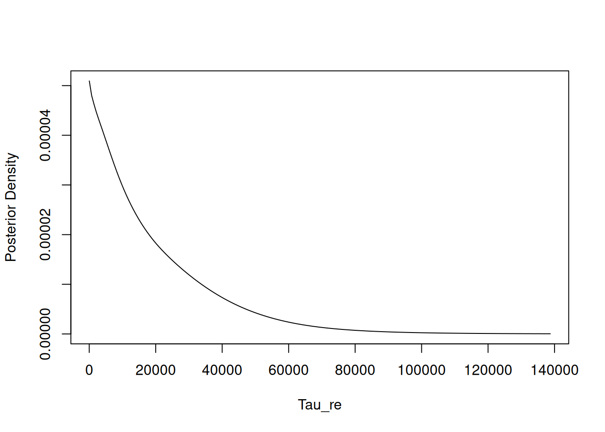

Chapter 8 Particle Filters, PMCMC, MCEM, Laplace approximation and quadrature
The NIMBLE algorithm library includes a growing set of non-MCMC algorithms including likelihood-based algorithms. These include:
- A suite of sequential Monte Carlo (particle filtering) algorithms (particle filters, particle MCMC, iterated particle filter, and ensemble Kalman filter);
- Monte Carlo expectation maximization (MCEM) for maximum likelihood estimation;
- Laplace approximation and adaptive Gauss-Hermite quadrature for maximum likelihood estimation of Laplace/AGHQ-approximated marginal likelihood; and
- nested approximation of Bayesian models using INLA-like methods.
8.1 Particle filters / sequential Monte Carlo and iterated filtering
As of Version 0.10.0 of NIMBLE, all of NIMBLE’s sequential Monte Carlo/particle filtering functionality lives in the nimbleSMC package, described in Michaud et al. (2021). Please load this package before trying to use these algorithms.
8.1.1 Filtering algorithms
NIMBLE includes algorithms for four different types of sequential Monte Carlo (also known as particle filters), which can be used to sample from the latent states and approximate the log likelihood of a state-space model. These include the bootstrap filter, the auxiliary particle filter, the Liu-West filter, and the ensemble Kalman filter. The iterated filtering version 2 (IF2) is a related method for maximum-likelihood estimation. Each of these is built with the eponymous functions buildBootstrapFilter, buildAuxiliaryFilter, buildLiuWestFilter, buildEnsembleKF, and buildIteratedFilter2. Each method requires setup arguments model and nodes; the latter should be a character vector specifying latent model nodes. In addition, each method can be customized using a control list argument. Details on the control options and specifics of the algorithms can be found in the help pages for the functions.
Once built, each filter can be run by specifying the number of particles. Each filter has a modelValues object named mvEWSamples that is populated with equally-weighted samples from the posterior distribution of the latent states (and in the case of the Liu-West filter, the posterior distribution of the top level parameters as well) as the filter is run. The bootstrap, auxiliary, and Liu-West filters, as well as the IF2 method, also have another modelValues object, mvWSamples. This has unequally-weighted samples from the posterior distribution of the latent states, along with weights for each particle. In addition, the bootstrap and auxiliary particle filters return estimates of the log-likelihood of the given state-space model.
We first create a linear state-space model to use as an example for our particle filter algorithms.
# Building a simple linear state-space model.
# x is latent space, y is observed data
timeModelCode <- nimbleCode({
x[1] ~ dnorm(mu_0, 1)
y[1] ~ dnorm(x[1], 1)
for(i in 2:t){
x[i] ~ dnorm(x[i-1] * a + b, 1)
y[i] ~ dnorm(x[i] * c, 1)
}
a ~ dunif(0, 1)
b ~ dnorm(0, 1)
c ~ dnorm(1,1)
mu_0 ~ dnorm(0, 1)
})
# simulate some data
t <- 25; mu_0 <- 1
x <- rnorm(1 ,mu_0, 1)
y <- rnorm(1, x, 1)
a <- 0.5; b <- 1; c <- 1
for(i in 2:t){
x[i] <- rnorm(1, x[i-1] * a + b, 1)
y[i] <- rnorm(1, x[i] * c, 1)
}
# build the model
rTimeModel <- nimbleModel(timeModelCode, constants = list(t = t),
data <- list(y = y), check = FALSE )
# Set parameter values and compile the model
rTimeModel$a <- 0.5
rTimeModel$b <- 1
rTimeModel$c <- 1
rTimeModel$mu_0 <- 1
cTimeModel <- compileNimble(rTimeModel)8.1.1.1 Bootstrap filter
Here is an example of building and running the bootstrap filter.
# Build bootstrap filter
rBootF <- buildBootstrapFilter(rTimeModel, "x",
control = list(thresh = 0.8, saveAll = TRUE,
smoothing = FALSE))
# Compile filter
cBootF <- compileNimble(rBootF,project = rTimeModel)
# Set number of particles
parNum <- 5000
# Run bootstrap filter, which returns estimate of model log-likelihood
bootLLEst <- cBootF$run(parNum)
# The bootstrap filter can also return an estimate of the effective
# sample size (ESS) at each time point
bootESS <- cBootF$returnESS()8.1.1.2 Auxiliary particle filter
Next, we provide an example of building and running the auxiliary particle filter. Note that a filter cannot be built on a model that already has a filter specialized to it, so we create a new copy of our state space model first.
# Copy our state-space model for use with the auxiliary filter
auxTimeModel <- rTimeModel$newModel(replicate = TRUE)
compileNimble(auxTimeModel)
# Build auxiliary filter
rAuxF <- buildAuxiliaryFilter(auxTimeModel, "x",
control = list(thresh = 0.5, saveAll = TRUE))
# Compile filter
cAuxF <- compileNimble(rAuxF,project = auxTimeModel)
# Run auxiliary filter, which returns estimate of model log-likelihood
auxLLEst <- cAuxF$run(parNum)
# The auxiliary filter can also return an estimate of the effective
# sample size (ESS) at each time point
auxESS <- cAuxF$returnESS()8.1.1.3 Liu and West filter
Now we give an example of building and running the Liu and West filter, which can sample from the posterior distribution of top-level parameters as well as latent states. Note that the Liu-West filter ofen performs poorly and is provided primarily for didactic purposes. The Liu and West filter accepts an additional params argument, specifying the top-level parameters to be sampled.
# Copy model
LWTimeModel <- rTimeModel$newModel(replicate = TRUE)
compileNimble(LWTimeModel)
# Build Liu-West filter, also
# specifying which top level parameters to estimate
rLWF <- buildLiuWestFilter(LWTimeModel, "x", params = c("a", "b", "c"),
control = list(saveAll = FALSE)) ## Warning in buildLiuWestFilter(LWTimeModel, "x", params = c("a", "b", "c"), :
## The Liu-West filter ofen performs poorly and is provided primarily for didactic
## purposes.8.1.1.4 Ensemble Kalman filter
Next we give an example of building and running the ensemble Kalman filter, which can sample from the posterior distribution of latent states.
# Copy model
ENKFTimeModel <- rTimeModel$newModel(replicate = TRUE)
compileNimble(ENKFTimeModel)
# Build and compile ensemble Kalman filter
rENKF <- buildEnsembleKF(ENKFTimeModel, "x",
control = list(saveAll = FALSE))
cENKF <- compileNimble(rENKF,project = ENKFTimeModel)
# Run ensemble Kalman filter
cENKF$run(parNum)Once each filter has been run, we can extract samples from the posterior distribution of our latent states as follows:
# Equally-weighted samples (available from all filters)
bootEWSamp <- as.matrix(cBootF$mvEWSamples) # alternative: as.list
auxEWSamp <- as.matrix(cAuxF$mvEWSamples)
LWFEWSamp <- as.matrix(cLWF$mvEWSamples)
ENKFEWSamp <- as.matrix(cENKF$mvEWSamples)
# Unequally-weighted samples, along with weights (available
# from bootstrap, auxiliary, and Liu and West filters)
bootWSamp <- as.matrix(cBootF$mvWSamples, "x")
bootWts <- as.matrix(cBootF$mvWSamples, "wts")
auxWSamp <- as.matrix(xAuxF$mvWSamples, "x")
auxWts <- as.matrix(cAuxF$mvWSamples, "wts")
# Liu and West filter also returns samples
# from posterior distribution of top-level parameters:
aEWSamp <- as.matrix(cLWF$mvEWSamples, "a")8.1.1.5 Iterated filtering 2 (IF2)
The IF2 method (Ionides et al. 2015) accomplishes maximum likelihood estimation using a scheme wherein both latent states and parameters are represented by particles that are weighted and resampled during the iterations. Iterations include perturbations to the parameter particles following a schedule of decreasing magnitude to yield convergence to the MLE.
Here we apply IF2 to Nile River flow data, specifying a changepoint in the year the Aswan Dam was constructed, as the dam altered river flows.
library(FKF)
flowCode <- nimbleCode({
for(t in 1:n)
y[t] ~ dnorm(x[t], sd = sigmaMeasurements)
x[1] ~ dnorm(x0, sd = sigmaInnovations)
for(t in 2:n)
x[t] ~ dnorm((t-1==28)*meanShift1899 + x[t-1], sd = sigmaInnovations)
logSigmaInnovations ~ dnorm(0, sd = 100)
logSigmaMeasurements ~ dnorm(0, sd = 100)
sigmaInnovations <- exp(logSigmaInnovations)
sigmaMeasurements <- exp(logSigmaMeasurements)
x0 ~ dnorm(1120, var = 100)
meanShift1899 ~ dnorm(0, sd = 100)
})
flowModel <- nimbleModel(flowCode, data = list(y = Nile),
constants = list(n = length(Nile)),
inits = list(logSigmaInnovations = log(sd(Nile)),
logSigmaMeasurements = log(sd(Nile)),
meanShift1899 = -100))Note that the prior distributions for the parameters are not used by IF2, except possibly to obtain boundaries of valid parameter values (not the case here).
Now we build the filter, specifying user-controlled standard deviations (in this case the same as the perturbation sigma values) for use in generating the initial particles for the parameters via the control list.
filter <- buildIteratedFilter2(model = flowModel,
nodes = 'x',
params = c('logSigmaInnovations',
'logSigmaMeasurements',
'meanShift1899'),
baselineNode = 'x0',
control = list(sigma = c(0.1, 0.1, 5),
initParamSigma = c(0.1, 0.1, 5)))
cFlowModel <- compileNimble(flowModel)
cFilter <- compileNimble(filter, project = flowModel)We now run the algorithm with 1000 particles for 100 iterations with the schedule parameter equal to 0.2.
In addition to the estimates, we can extract the values of the log-likelihood, the estimates and the standard deviation of the parameter particles as they evolve over the iterations, in order to assess convergence.
set.seed(1)
est <- cFilter$run(m = 1000, niter = 100, alpha = 0.2)
cFilter$estimates[95:100,] ## Last 5 iterations of parameter values## [,1] [,2] [,3]
## [1,] 0.013306153 4.822613 -269.7837
## [2,] -0.013961938 4.857470 -271.4965
## [3,] 0.002183997 4.850475 -271.1919
## [4,] 0.015598044 4.851961 -272.3889
## [5,] -0.005571944 4.842719 -272.6390
## [6,] 0.042982317 4.837347 -271.1800## [1] -627.0497 -626.9570 -626.9856 -626.9954 -626.7448 -626.7521 -626.8472
## [8] -626.7398 -626.9869 -627.1354 -626.6648Comparing to use of the the Kalman Filter from the FKF package, we see the log-likelihood is fairly similar:
dtpred <- matrix(0, ncol = length(Nile))
dtpred[28] <- est[3]
ct <- matrix(0)
Zt <- Tt <- matrix(1)
fkfResult <- fkf(HHt = matrix(exp(2*est[1])),
GGt = matrix(exp(2*est[2])),
yt = rbind(Nile),
a0 = 1120,
P0 = matrix(100),
dt = dtpred, ct = ct, Zt = Zt, Tt = Tt)
fkfResult$logLik## [1] -626.55218.1.2 Particle MCMC (PMCMC)
Particle MCMC (PMCMC) is a method that uses MCMC for top-level model
parameters and uses a particle filter to approximate the time-series
likelihood for use in determining MCMC acceptance probabilities
(Andrieu, Doucet, and Holenstein 2010). NIMBLE implements PMCMC by
providing random-walk Metropolis-Hastings samplers for model
parameters that make use of particle filters in this way. These
samplers can use NIMBLE’s bootstrap filter or auxiliary particle
filter, or they can use a user-defined filter. Whichever filter is
specified will be used to obtain estimates of the likelihood of the
state-space model (marginalizing over the latent states), which is
used for calculation of the Metropolis-Hastings acceptance
probability. The RW_PF sampler uses a univariate normal
proposal distribution, and can be used to sample scalar top-level
parameters. The RW_PF_block sampler uses a multivariate normal
proposal distribution and can be used to jointly sample vectors of
top-level parameters. The PMCMC samplers can be specified with a call
to addSampler with type = "RW_PF" or type = "RW_PF_block",
a syntax similar to the other MCMC samplers listed
in Section 7.11.
The RW_PF sampler and RW_PF_block sampler can be
customized using the control list argument to set the adaptive
properties of the sampler and options for the particle filter
algorithm to be used. In addition, providing
pfOptimizeNparticles=TRUE in the control list will use an
experimental algorithm to estimate the optimal number of particles to
use in the particle filter. See help(samplers) for details. The
MCMC configuration for the timeModel in the previous section will
serve as an example for the use of our PMCMC sampler. Here we use the
identity matrix as our proposal covariance matrix.
timeConf <- configureMCMC(rTimeModel, nodes = NULL) # empty MCMC configuration
# Add random walk PMCMC sampler with particle number optimization.
timeConf$addSampler(target = c("a", "b", "c", "mu_0"), type = "RW_PF_block",
control = list(propCov= diag(4), adaptScaleOnly = FALSE,
latents = "x", pfOptimizeNparticles = TRUE))The type = "RW_PF" and type = "RW_PF*block" samplers
default to using a bootstrap filter. The adapatation control
parameters adaptive, adaptInterval, and
adaptScaleOnly work in the same way as for an RW and RW*block samplers.
However, it is not clear if the same approach to adaptation works well
for PMCMC, so one should consider turning off adaptation and using
a well-chosen proposal covariance.
It is also possible that more efficient results
can be obtained by using a custom filtering algorithm. Choice
of filtering algorithm can be controlled by the pfType control
list entry. The pfType entry can be set either to
'bootstrap' (the default), 'auxiliary', or the name of a
user-defined nimbleFunction that returns a likelihood approximation.
Any user-defined filtering nimbleFunction named in the pfType
control list entry must satsify the following:
The nimbleFunction must be the result of a call to
nimbleFunction().The
nimbleFunctionmust have setup code that accepts the following (and only the following) arguments:model, the NIMBLE model object that the MCMC algorithm is defined on.latents, a character vector specifying the latent model nodes over which the particle filter will stochastically integrate over to estimate the log-likelihood function.control, anRlistobject. Note that thecontrollist can be used to pass in any additional information or arguments that the custom filter may require.
The
nimbleFunctionmust have arunfunction that accepts a single integer arugment (the number of particles to use), and returns a scalar double (the log-likelihood estimate).The
nimbleFunctionmust define, in setup code, amodelValuesobject namedmvEWSamplesthat is used to contain equally weighted samples of the latent states (that is, thelatentsargument to the setup function). Each time therun()method of thenimbleFunctionis called with number of particlesm, themvEWSamplesmodelValuesobject should be resized to be of sizemvia a call toresize(mvEWSamples, m).
8.2 Monte Carlo Expectation Maximization (MCEM)
Suppose we have a model with missing data – or latent variables or random effects, which can be viewed as missing data – and we would like to maximize the marginal likelihood of the model, integrating over the missing data. A brute-force method for doing this is MCEM. This is an EM algorithm in which the missing data are simulated via Monte Carlo (often MCMC, when the full conditional distributions cannot be directly sampled from) at each iteration. MCEM can be slow but is also a general workhorse method that is applicable to a wide range of problems.
buildMCEM provides an (optionally) ascent-based MCEM algorithm based on
Caffo, Jank, and Jones (2005). buildMCEM was re-written for nimble version 1.2.0 and is
not compatible with previous versions. For the E (expectation) step,
buildMCEM uses an MCMC for the latent states given the data and current
parameters. For the M (maximization) step, buildMCEM uses optim.
The ascent-based feature uses an estimate of the standard error of the move in
one iteration to determine if that move is clearly uphill or is swamped by
noise due to using a Monte Carlo (MCMC) sample. In the latter case, the MCMC
sample size is increased until there is a clear uphill move. In a similar
manner, convergence is determined based on whether the uphill move is
confidently less than a tolerance level taken to indicate that the algorithm
is at the MLE. The associated tuning parameters, along with details on control
over each step, are described at help(buildMCEM).
The maximization part of each MCEM iteration will use gradients from automatic
differentiation if they are supported for the model and buildDerivs=TRUE
when nimbleModel was called to create the model. If any parameters have
constraints on valid values (e.g. greater than 0), by default a parameter
transformation will be set up (see help(parameterTransform)) and
optimization will be done in the transformed (unconstrained) space.
Additionally, the MCEM algorithm can provide an estimate of the asymptotic covariance matrix of the parameters. See 8.2.1.
We will revisit the pump example to illustrate the use of NIMBLE’s MCEM algorithm.
pump <- nimbleModel(code = pumpCode, name = "pump", constants = pumpConsts,
data = pumpData, inits = pumpInits, check = FALSE,
buildDerivs=TRUE)
Cpump <- compileNimble(pump)
# build an MCEM algorithm with ascent-based convergence criterion
pumpMCEM <- buildMCEM(model = pump,
latentNodes = "theta")
# The latentNodes="theta" would be determined by default but is shown for clarity.
CpumpMCEM <- compileNimble(pumpMCEM, project=pump)The first argument to buildMCEM, model, is a NIMBLE model. At the moment, the
model provided cannot be part of another MCMC sampler.
## [Note] Iteration Number: 1.
## [Note] Current number of MCMC iterations: 1000.
## [Note] Parameter Estimates:
## 0.818983
## 1.14746
## [Note] Convergence Criterion: 0.684673.
## [Note] Iteration Number: 2.
## [Note] Current number of MCMC iterations: 1000.
## [Note] Parameter Estimates:
## 0.818793
## 1.21849
## [Note] Convergence Criterion: 0.0209188.
## [Note] Iteration Number: 3.
## [Note] Current number of MCMC iterations: 1000.
## [Note] Parameter Estimates:
## 0.819104
## 1.24505
## [Note] Convergence Criterion: 0.00392522.
## [Note] Iteration Number: 4.
## [Note] Current number of MCMC iterations: 1000.
## [Note] Parameter Estimates:
## 0.838402
## 1.29963
## [Note] Convergence Criterion: 0.00657192.
## [Note] Iteration Number: 5.
## [Note] Current number of MCMC iterations: 1000.
## [Note] Parameter Estimates:
## 0.821287
## 1.26525
## [Note] Convergence Criterion: 0.00361366.
## [Note] Iteration Number: 6.
## [Note] Current number of MCMC iterations: 1000.
## [Note] Parameter Estimates:
## 0.835258
## 1.29028
## [Note] Convergence Criterion: 0.00249731.
## Monte Carlo error too big: increasing MCMC sample size.
## [Note] Iteration Number: 7.
## [Note] Current number of MCMC iterations: 1167.
## [Note] Parameter Estimates:
## 0.829192
## 1.28844
## [Note] Convergence Criterion: 0.000914589.## [1] 0.8291919 1.2884366For this model, we can check the result by analytically integrating over the latent nodes (possible for this model but often not feasible), which gives maximum likelihood estimates of \(\hat\alpha=0.823\) and \(\hat\beta = 1.261\). Thus the MCEM seems to do pretty well, though tightening the convergence criteria may be warranted in actual usage.
For more complicated models, it is worth exploring the tuning parameters (see
help(buildMCEM)). MCEM inherits from the EM algorithm the difficulty that the
convergence path can be slow, depending on the model. This can depend on the
parameterization, such as whether random effects are centered or uncentered, so
it can also be worth exploring different ways to write a model.
8.2.1 Estimating the asymptotic covariance From MCEM
The vcov method of an MCEM nimbleFunction calculates a Monte Carlo estimate of
the asymptotic covariance of the parameters based on the Hessian matrix at the
MLE, using the method of Louis (1982). Arguments to this method allow control over
whether to generate a new MCMC sample for this purpose and other details.
Continuing the above example, here is the covariance matrix:
## [,1] [,2]
## [1,] 0.1295558 0.2263726
## [2,] 0.2263726 0.67589458.3 Laplace approximation and adaptive Gauss-Hermite quadrature
As of NIMBLE version 1.4.0, NIMBLE’s Laplace and AGHQ approximation live in the nimbleQuad package. Please load that package before trying to use these algorithms.
Many hierarchical models include continuous random effects that must be integrated over to obtain the (marginal) likelihood of the parameters given the data. Laplace approximation and adaptive Gauss-Hermite quadrature (AGHQ) are often accurate and fast approximations for doing so. Laplace is simply AGHQ with a single quadrature point (the conditional mode of the random effects).
NIMBLE provides these algorithms via buildLaplace and buildAGHQuad (the
former simply calls the latter), which take advantage of the automatic
differentiation features introduced in version 1.0.0.
Next we will show how to use nimble’s Laplace approximation, which uses derivatives internally, to get maximum (approximate) likelihood estimates for a GLMM model.
Additional details on Laplace and on AGHQ can be found by running help(buildLaplace).
Laplace approximation is equivalent to first-order adaptive Gauss-Hermite quadrature, which is also available (via buildAGHQ and runAGHQ), although here we will focus on Laplace approximation only. In this context, Laplace approximation approximates the integral over continuous random effects needed to calculate the likelihood. Hence, it gives an approximate likelihood (often quite accurate) that can be used for maximum likelihood estimation. Note that the Laplace approximation uses second derivatives, and the gradient of the Laplace approximation (used for finding the MLE efficiently) uses third derivatives. These are described in detail by Skaug and Fournier (2006) and Fournier et al. (2012).
8.3.1 GLMM example
We’ll re-introduce the simple Poisson Generalized Linear Mixed Model (GLMM) example model from 7.11.2.1 and use Laplace approximation on it. There will be 10 groups (i) of 5 observations (j) each. Each observation has a covariate, X, and each group has a random effect ran_eff. Here is the model code:
model_code <- nimbleCode({
# priors
intercept ~ dnorm(0, sd = 100)
beta ~ dnorm(0, sd = 100)
sigma ~ dhalfflat()
# random effects and data
for(i in 1:10) {
# random effects
ran_eff[i] ~ dnorm(0, sd = sigma)
for(j in 1:5) {
# data
y[i,j] ~ dpois(exp(intercept + beta*X[i,j] + ran_eff[i]))
}
}
})Note that we changed the prior on sigma to avoid having an upper bound. Prior distributions are not included in maximum likelihood using the Laplace approximation but do indicate the range of valid values. We recommend caution in using priors for variance component parameters (standard deviations, variances, precisions) that have a finite upper bound (e.g., sigma ~ dunif(0, 100)), because the probit transformation applied in that case may result in poor optimization performance.
We’ll simulate some values for X.
Next, we build the model, including buildDerivs=TRUE, which is needed to use derivatives with a model. Internally Laplace/AGHQ approximation use derivatives from NIMBLE’s automatic differentiation (AD) system to build the approximation to the marginal likelihood.
model <- nimbleModel(model_code, constants = list(X = X), calculate = FALSE,
buildDerivs = TRUE) # Here is the argument needed for AD.As preparation for the Laplace examples below, we need to finish setting up the GLMM. We could have provided data in the call to nimbleModel, but instead we will simulate it using the model itself. Specifically, we will set parameter values, simulate data values, and then set those as the data to use.
model$intercept <- 0
model$beta <- 0.2
model$sigma <- 0.5
model$calculate() # This will return NA because the model is not fully initialized.## [1] NAmodel$simulate(model$getDependencies('ran_eff'))
model$calculate() # Now the model is fully initialized: all nodes have valid values.## [1] -78.44085Finally, we will make a compiled version of the model.
8.3.2 Using Laplace approximation
To create a Laplace approximation specialized to the parameters of interest for this model, we use the nimbleFunction buildLaplace. For many models, the setup code in buildLaplace will automatically determine the random effects to be integrated over and the associated nodes to calculate. In fact, if you omit the parameter nodes, it will assume that all top-level nodes in the model should be treated as parameters. If fine-grained control is needed, these various sets of nodes can be input directly into buildLaplace. To see what default handling of nodes is being done for your model, use setupMargNodes with the same node inputs as buildLaplace.
glmm_laplace <- buildLaplace(model, paramNodes = c('intercept','beta','sigma'))
Cglmm_laplace <- compileNimble(glmm_laplace, project = model)With the compiled Laplace approximation, we can now find the MLE and related information such as standard errors.
## $params
## estimate stdError
## intercept -0.1491944 0.2464880
## beta 0.1935212 0.1467230
## sigma 0.5703362 0.2066517
##
## $randomEffects
## estimate stdError
## ran_eff[1] -0.33711373 0.4305831
## ran_eff[2] -0.02964535 0.3987838
## ran_eff[3] 0.40575212 0.3858675
## ran_eff[4] 1.04768889 0.3779772
## ran_eff[5] -0.36731650 0.4290568
## ran_eff[6] 0.26907207 0.3863272
## ran_eff[7] -0.54950702 0.4654196
## ran_eff[8] -0.11864461 0.4175452
## ran_eff[9] 0.10006643 0.3926128
## ran_eff[10] -0.04411292 0.3971147
##
## $vcov
## intercept beta sigma
## intercept 0.060756345 -0.002691117 -0.014082707
## beta -0.002691117 0.021527641 -0.005098532
## sigma -0.014082707 -0.005098532 0.042704916
##
## $logLik
## [1] -63.44875
##
## $df
## [1] 3
##
## $originalScale
## [1] TRUEOne of output elements is the maximized log likelihood (logLik), which is useful for model comparison.
buildLaplace actually offers several choices in how computations are done, differing in how they use double taping for derivatives or not. In some cases one or another choice might be more efficient. See help(buildLaplace) if you want to explore it further.
Finally, let’s confirm that it worked by comparing to results from package glmmTMB. In this case, nimble’s Laplace approximation is faster than glmmTMB (on the machine used here), but that is not the point of this example. Here our interest is in checking that nimble’s Laplace approximation worked correctly in a case where we have an established tool such as glmmTMB.
library(glmmTMB)
y <- as.numeric(model$y) # Re-arrange inputs for call to glmmTMB
X <- as.numeric(X)
group <- rep(1:10, 5)
data <- as.data.frame(cbind(X,y,group))
tmb_fit <- glmmTMB(y ~ X + (1 | group), family = poisson, data = data)
summary(tmb_fit)## Family: poisson ( log )
## Formula: y ~ X + (1 | group)
## Data: data
##
## AIC BIC logLik deviance df.resid
## 132.9 138.6 -63.4 126.9 47
##
## Random effects:
##
## Conditional model:
## Groups Name Variance Std.Dev.
## group (Intercept) 0.3253 0.5703
## Number of obs: 50, groups: group, 10
##
## Conditional model:
## Estimate Std. Error z value Pr(>|z|)
## (Intercept) -0.1492 0.2465 -0.605 0.545
## X 0.1935 0.1467 1.319 0.187## 'log Lik.' -63.44875 (df=3)The results match within numerical tolerance typical of optimization problems. Specifically, the coefficients for (Intercept) and X match nimble’s Intercept and beta, the random effects standard deviation for group matches nimble’s sigma, and the standard errors match.
8.3.3 Using the Laplace approximation methods directly
If one wants finer grain control over using the approximation, one can use the methods provided by buildLaplace. These include calculating the Laplace approximation for some input parameter values, calculating its gradient, and maximizing the Laplace-approximated likelihood. Here we’ll show some of these steps.
# Get the Laplace approximation for one set of parameter values.
Cglmm_laplace$calcLaplace(c(0, 0, 1)) ## [1] -65.57246## [1] -1.866840 8.001648 -4.059555MLE <- Cglmm_laplace$findMLE(c(0, 0, 1)) # Find the (approximate) MLE.
MLE$par # MLE parameter values## [1] -0.1491983 0.1935269 0.5703413## [1] -63.44875The final outputs show the MLE for intercept, beta, and sigma, followed by the maximum (approximate) likelihood.
More information about the MLE can be obtained in two ways. The summary method
can give estimated random effects and standard errors as well as the variance-covariance matrix
for the parameters and/or the random effects. The summaryLaplace function
returns similar information but with names included in a more useful way. Here is some example code (results not shown):
## [1] -0.33711487 -0.02964301 0.40575572 1.04769223 -0.36731868 0.26907375
## [7] -0.54951160 -0.11864177 0.10006955 -0.04411124## estimate stdError
## intercept -0.1491983 0.2464895
## beta 0.1935269 0.1467230
## sigma 0.5703413 0.20665318.3.4 Changing the optimization methods
When finding the MLE via Laplace approximation or adaptive Gauss-Hermite quadrature (AGHQ), there are two numerical optimizations: (1) maximizing the joint log-likelihood of random effects and data given a set of parameter values to construct the approximation to the marginal log-likelihood at the given parameter values, and (2) maximizing the approximation to the marginal log-likelihood over the parameter values. Optimization (1) is the “inner” optimization and optimization (2) is the “outer” optimization.
Finding the MLE via Laplace approximation may be sensitive to the optimization methods used, in particular the choice of optimizer for the inner optimization, and the “BFGS” optimizer available through optim() may not perform well for inner optimization.
As of version 1.3.0, the default choices for both the inner and outer optimization use R’s nlminb optimizer.
Users can choose a different optimizer for both of the optimizations.
To change the inner or outer optimizers, one can use the innerOptimMethod and outerOptimMethod elements of the control list argument to buildLaplace. One can modify various settings that control the behavior of the inner and outer optimizers via control as well. See help(buildLaplace) for more details.
Once a Laplace approximation is built, one can use updateSettings to modify the choices of optimizers and various settings that control the behavior of the inner and outer optimizers (see help(buildLaplace) for details).
By default, NIMBLE provides various optimization methods available through R’s optim() as well as R’s nlminb method and the BOBYQA method from the nloptr package (by specifying bobyqa). Users can also provide their own optimization function in R that they can then use with Laplace approximation. User optimization functions must have a particular set and order of arguments and must first be registered with NIMBLE via nimOptimMethod. See help(nimOptim) for more details.
Here’s an example of setting up the Newton method optimizer from the TMB package as the inner optimizer for use with NIMBLE’s Laplace approximation. (Note that NIMBLE and TMB have distinct AD systems and Laplace approximation implementations; here we simply use the TMB::newton optimization function.)
library(TMB)
library(Matrix)
## Create an R wrapper function that has the interface needed for NIMBLE
## and wraps the optimizer of interest.
nimbleTMBnewton <- function(par, fn, gr, he, lower, upper, control, hessian) {
## Wrap `he` as return value needs to be of class `dsCMatrix`.
he_matrix <- function(p) Matrix(he(p), doDiag = FALSE, sparse = TRUE)
invalid <- function(x) is.null(x) || is.na(x) || is.infinite(x)
if(invalid(control$trace)) control$trace <- 1
if(invalid(control$maxit)) control$maxit <- 100
if(invalid(control$reltol)) control$reltol <- 1e-8
res <- newton(par, fn, gr, he_matrix,
trace = control$trace, maxit = control$maxit, tol = control$reltol)
## Additional arguments (e.g., `alpha` and `tol10`) can be hard-coded in `newton()` call.
ans <- list(
## What is handled in the return is fairly particular, so often needs conversion
## from a given method such as TMB::newton.
par = res$par,
value = res$value,
counts = c(0, 0, 0), # Counts of fn/gr/he calls, but these are not counted by TMB::newton.
evaluations = res$iterations,
hessian = NULL, # TMB::newton gives a `dsCMatrix` but we need a base R matrix.
message = "ran by TMB::newton",
convergence = 0 # TMB::newton does not return a convergence code so give 0 (converged).
)
return(ans)
}
## Register the optimizer with NIMBLE.
nimOptimMethod("nimbleTMBnewton", nimbleTMBnewton)
## Use the optimizer for the inner optimization when finding the Laplace MLE.
glmm_laplace <- buildLaplace(model, c('intercept','beta','sigma'),
control = list(innerOptimMethod = "nimbleTMBnewton"))8.4 Nested approximation methods
NIMBLE version 1.4.0 introduces a nested approximation method that provides approximate posterior inference using methodology similar to the well-known INLA approach Martins et al. (2013), implemented in the R-INLA package and to the related methods for extended Gaussian latent models (EGLMs) of Stringer, Brown, and Stafford (2023), implemented in the aghq R package.
Such nested approximations build on Laplace approximation, which provides an approximate marginal posterior for model (hyper)parameters, integrating (marginalizing) over latent nodes. Then instead of maximizing the approximation, one approximates the marginal posterior of the (hyper)parameters on a carefully-chosen set of points. Inference for individual (hyper)parameters is done by numerical approximation, numerical integration, or sampling from an approximation to the marginal posterior. Inference for the latent nodes is done via numerical integration or via sampling from a mixture (over the hyperparameter points) of multivariate normal distributions.
Our implementation in NIMBLE borrows heavily from the INLA and EGLM approaches.
Here we list some of the similarities and differences from INLA and the EGLM approach (aghq package):
- Like EGLM, we use automatic differentiation to calculate the Laplace-approximated marginal likelihood.
- Like EGLM, we take the latent nodes to be only the latent stochastic parameters in the model, without including the additive predictor values as done in INLA.
- For marginal inference on a chosen univariate (hyper)parameter we provide the univariate asymmetric Gaussian approximation used by INLA and also (for increased accuracy at additional computational expense) numerical integration via AGHQ as in EGLM.
- For joint inference on the (hyper)parameters we provide simulation from the joint asymmetric Gaussian approximation as done in INLA.
- For inference on the latent nodes, we provide joint simulation from a multivariate normal mixture over the (hyper)parameter grid points as done in EGLM and also available in INLA. Unlike in INLA, we do not provide univariate latent inference using deterministic nested Laplace approximation. The simulation-based approach may not be as accurate, but it allows for joint inference, including inference on quantities that depend on more than one latent node.
- Unlike either EGLM or INLA, latent nodes are not required to have a joint normal distribution, though accuracy may be less when the latent nodes have other distributions.
- For latent nodes whose conditional distributions factor into univariate conditionally independent sets, the Laplace approximation is a product of univariate approximations, and one can instead use NIMBLE’s AGHQ approximation for higher accuracy.
- We allow the user to choose the grid used for the (hyper)parameters. By default for \(d>2\) parameters, we use the CCD grid used by INLA, but one can choose to use the AGHQ grid as used in EGLM or provide one’s own grid. In the future we may provide additional grids, such as sparse grids.
8.4.1 Overview of the methodology
NIMBLE’s nested approximation consists of several pieces, with different options that allow a user to choose how the approximation is done. We briefly describe the pieces here. For simplicity, we refer to the (hyper)parameters simply as “parameters”.
8.4.1.1 Marginalization over the latent nodes
We approximately marginalize (integrate) over the latent nodes to approximate the marginal joint distribution of the parameters. This uses Laplace approximation and is sometimes referred to as the “inner” marginalization. The Laplace approximation is computed using the gradient and Hessian with respect to the latent nodes for a given set of parameter values.
In the case that the conditional distributions of the latent nodes factor into univariate conditionally-independent sets of nodes (conditional on the parameters), this approximation by default uses the product of univariate Laplace approximations and in NIMBLE can be made more accurate by using AGHQ with more than one quadrature point.
8.4.1.2 Approximating the marginal parameter density on a grid
In order to simulate from the posterior distribution for the latent nodes (or to estimate the marginal likelihood), one needs to evaluate the joint parameter posterior density on a grid of points.
NIMBLE primarily offers the options of using a CCD grid (as used by INLA) or an AGHQ grid (as used in the EGLM approach). While the AGHQ grid is expected to be more accurate, the CCD grid uses fewer points and is therefore less computationally intensive.
For \(d <= 2\) NIMBLE defaults to the AGHQ grid and otherwise uses the CCD grid.
NIMBLE also allows users to provide their own grid.
8.4.1.3 Joint inference for latent nodes
NIMBLE provides the ability to simulate the latent nodes from a mixture of multivariate Gaussian distributions, mixing over the parameter values at the grid points discussed above. The multivariate Gaussian distribution is based on the Laplace approximation for the latent nodes, which provides the mean and variance conditional on the parameter value at the grid point. The weights in the mixture are based on the Laplace-approximated marginal density (for the parameters and data, jointly), with stratified sampling to reduce variance.
INLA adjusts the latent node marginals via a Gaussian copula to correspond with a skew-normal approximation [TODO: check on terminology here]. We have not implemented such an approximation so no adjustment is done in NIMBLE.
8.4.1.4 Univariate inference for parameters
NIMBLE offers two approaches for univariate marginal inference for individual parameters. The first is a computationally-efficient integration-free method that mimics that used by INLA (Martins et al. 2013). This uses a joint asymmetric Gaussian distribution approximation as the marginal joint posterior of the parameters and allows one to calculate the density at individual evaluation points for the univariate marginal. NIMBLE calculates the univariate density on a fine grid of evaluation points, from which one can build a spline-based approximation to the marginal density that can be used to compute moments and quantiles for univariate inference.
The second, more accurate approach, is to use \(d-1\)-dimensional AGHQ to integrate over the Laplace-approximated joint parameter marginal distribution. This can greatly improve accuracy, but can be computationally expensive unless \(d\) is quite small (e.g., 2-4), or even if the number of latent node elements is quite large (which makes the Laplace approximation expensive). Because of the expense, we only take this approach if requested by the user, and we allow the user to choose the specific parameter(s) for which they want to estimate marginals with this approach.
8.4.1.5 Joint inference for parameters
If one is interested in joint inference for the parameters (or inference on functions of more than one parameter), NIMBLE provides the ability to simulate from the asymmetric multivariate Gaussian distribution approximation to the marginal joint distribution of the parameters that is used by INLA (Martins et al. 2013). The approximation is done in the transformed space after transforming the parameters to be unconstrained (this can sometimes reduce the dimension of the parameter vector such as with the Dirichlet, Wishart, and LKJ distributions). In the transformed space, a two-piece split normal distribution (which allows for skew in both directions) is used for each univariate component after rotating the transformed parameters based on the Hessian at the maximum to account for the correlation structure.
As also done in INLA, we use a Gaussian copula to transform the simulated parameter values, in a univariate fashion, to match the univariate marginal distributions estimated either from the integration-free or AGHQ approaches.
8.4.1.6 Approximate marginal likelihood
The marginal likelihood for a model integrates over all parameters (including both ‘parameters’ discussed above and latent nodes). This can be useful for model selection, but is not well-defined if any prior distributions are improper and is not reliable for diffuse prior distributions.
In NIMBLE’s nested approximation, the marginal likelihood is approximated either based on the approximate Gaussian distribution for the parameters used by INLA or via AGHQ using the AGHQ grid weights and associated Laplace-approximated parameter density values.
8.4.1.7 Determining latent nodes and parameters
By default, NIMBLE’s nested approximation will try to automatically determine the node sets, selecting random effects and regression fixed effects (coefficients) as the “latent nodes” and other unknown quantities (e.g., variance components and parameters of random effects distributions) as “parameters”.
Given the computations involved, it is best to have the number of parameters be relatively small, such as fewer than 10.
Note that the treatment of fixed effects differs between the nested approximation and NIMBLE’s Laplace approximation. In Laplace approximation, fixed effects are treated as parameters of interest and maximized with respect to, rather than being marginalized over. In the nested approximation, they are marginalized over and inference on them can be done based on simulated values. One advantage of grouping fixed effects with random effects is that one can make simulation-based inference on quantities that depend on both sets of effects, such a regression-style linear predictors.
It is also possible to choose which nodes go in which set (Section 8.4.2.2. One might choose to include fixed effects in the parameter set, akin to how Laplace approximation works. Another situation where one might configure this manually is if random effects in a model are specified in a “non-centered” parameterization such as:
\[ \eta_i = \mu + \sigma b_i \\ b_i \sim \mathcal{N}(0, 1) \]
In this parameterization the random effects, \(b_i\), do not depend on any parameters because \(\mu\) and \(\sigma\) are involved directly in the linear predictor, \(\eta_i\). This stands in contrast to the common centered parameterization, with \(b_i \sim \mathcal{N}(\mu, \sigma)\). Because each \(b_i\) does not depend on any parameters, NIMBLE’s nested approximation node determination algorithm would by default put the \(b_i\) nodes into the parameter set, which in general would result in very slow computation (because there would be a large number of parameters).
One further note is that it can be advantageous computationally to have fixed effects in the parameter set. This can sometimes allow NIMBLE to set up a product of lower-dimensional Laplace approximations instead of one higher-dimensional Laplace approximation. However, the benefit of the product trades off with the higher-dimensionality of the parameter vector, which increases computation. How these trade off in a particular modeling context can be worth experimentation.
8.4.1.8 Computational bottlenecks
To sample the latent nodes, the algorithm needs to find the weights and the parameters of the multivariate normal approximation to the latent nodes at each point in the grid of parameters. For a large number of parameters this can be expensive, because Laplace approximation is done at many grid points. For a large number of latent node elements, even a single Laplace approximation at a single set of parameter values can be expensive. Computing the parameters of this approximation involves optimization over a space whose dimension is the number of latent node elements, as well as computation of the Hessian at the maximum. Furthermore, for inference, one then needs to simulate from the high-dimensional multivariate normal.
To approximate the univariate marginals for the parameters via AGHQ, this requires \(d-1\)-dimensional AGHQ, which can be expensive, because the number of quadrature points grows as \((d-1)^k\) where \(k\) is the number of Gauss-Hermite quadrature grid points in one dimension. Often this would be chosen to be small, such as 3 or 5, but even then the computations increase rapidly in \(d\).
8.4.2 Using NIMBLE’s nested approximation
Next we’ll give example usage of NIMBLE’s nested approximation. Further details are available in the usual R help content for the various functions.
The core functions are buildNestedApprox and runNestedApprox. These are analagous to the “build” and “run” functions for MCMC and for Laplace.
buildNestedApproxsets up the approximation for a model of interest and allows the user to control various aspects of how the approximation is done. It returns an uncompiled nested approximation algorithm.runNestedApproxruns the basic steps of the approximation, giving initial univariate marginal parameter inference (and optionally allowing the user to request latent node or parameter samples). It returns a nested approximation (nestedApprox) object.- Various additional functions can be applied to the nested approximation object to do further components of the approximation, including:
improveParamMarginals: use AGHQ to improve marginal parameter inference relative to the default inference based on the asymmetric Gaussian approximation.sampleLatents: sample from the approximate joint distribution of the latent nodes (the mixture over parameter grid points of multivariate normal distributions).sampleParams: sample from the asymmetric Gaussian approximation for the parameters.calcMarginalLogLikImproved: use AGHQ to improve estimation of the marginal likelihood relative to the default estimate based on the asymmetric Gaussian approximation.{d,e,q,r}marginalandplotMarginal: estimate the density (d), expectations (e), and quantiles (q) for a univariate marginal and sample from the marginal (r) and plot the marginal density.
8.4.2.1 Example use
[This is a normal-normal case so one can marginalize exactly and do inference (MCMC or MLE or otherwise) on the analytically-marginalized model. We could look for a difference example, such as the E. cervi example from our trainings.]
[I think we probably want to shift to parameterizing in terms of std. dev. for interpretability of output and better choice of priors]
We’ll use the penicillin example from the faraway package, which has data on penicillin production as a function of treatment (four levels) and blend (five levels). The treatment is considered as a fixed effect (note the constant, large variance/small precision for b[i]) while the blend/block is considered as a random effect. Note that because of the normal likelihood and normal priors for the latent nodes, the conditional distribution for the latent nodes given the data and hyperparameters is a multivariate normal, so the Laplace approximation in this case is exact. In many uses of nested approximation, the likelihood is not normal, but the latent node distribution is.
data(penicillin, package="faraway")
code <- nimbleCode({
for(i in 1:n) {
mu[i] <- inprod(b[1:nTreat], x[i, 1:nTreat]) + re[blend[i]]
y[i] ~ dnorm(mu[i], tau = Tau)
}
Tau ~ dgamma(1, 5e-05)
Tau_re ~ dgamma(1, 5e-05)
for( i in 1:nTreat ){ b[i] ~ dnorm(0, tau = 0.001) }
for( i in 1:nBlend ){ re[i] ~ dnorm(0, tau = Tau_re) }
})
X <- model.matrix(~treat, data = penicillin)
data = list(y = penicillin$yield)
constants = list(nTreat = 4, nBlend = 5, n = nrow(penicillin),
x = X, blend = as.numeric(penicillin$blend))
inits <- list(Tau = 1, Tau_re = 1, b = c(mean(data$y), rep(0,3)), re = rep(0,5))
model <- nimbleModel(code, data = data, constants = constants,
inits = inits, buildDerivs = TRUE)
comp_model <- compileNimble(model)The prior distributions for the precision parameters, Tau and Tau_re, are chosen to match INLA’s default priors, and for a real analysis, more careful consideration of these would be worthwhile.
Given a NIMBLE model, we can build (and compile) our nested approximation.
##
## Attaching package: 'nimbleQuad'## The following objects are masked from 'package:nimble':
##
## buildAGHQ, buildLaplace, runAGHQ, runLaplace, summaryAGHQ,
## summaryLaplace## Building nested posterior approximation for the following node sets:
## - parameter nodes: Tau, Tau_re
## - latent nodes: b (4 elements), re (5 elements)
## with AGHQ grid for the parameters and Laplace approximation for the latent nodes.## Building AGHQ/Laplace approximation.## Compiling
## [Note] This may take a minute.
## [Note] Use 'showCompilerOutput = TRUE' to see C++ compilation details.Note that NIMBLE has automatically put the two variance components into the parameters and the fixed and random effects into the latent nodes. As described below, one can change the node sets if desired by passing paramNodes and/or latentNodes.
Because there are only two parameter nodes, an AGQH grid for the parameters is used by default.
Next we run our nested approximation, getting back initial inference on the parameters.
# To prefer fixed rather than scientific notation for easier viewing.
options(scipen = 2)
result <- runNestedApprox(comp_approx)For small models this initial step generally won’t take too long, but even for large models or a large number of parameters, this step will generally be faster than the steps shown below because the asymmetric Gaussian distribution approximation for the parameters can be computed quickly, only requiring maximization and computation of the Hessian for the Laplace approximation (that said that could take some time when there is a large number of latent nodes) followed by some simple calculations.
Note that given the vague priors for the parameters used here, the marginal likelihood is probably not useful.
Now, let’s refine our estimation of the parameters by using AGHQ in place of the asymmetric Gaussian approximation. That does \(d-1\) dimensional AGHQ (simply 1-d AGHQ) for each parameter requested (by default all of the parameters).
## Calculating inner AGHQ/Laplace approximation at (5) marginal points with 3 quadrature grid points (one dot per grid point): (1)...(2)...(3)...(4)...(5)...## Model (hyper)parameters:
## mean sd 2.5% 25% 50%
## Tau 0.03723786 0.01250227 0.01796495 0.02824207 0.03556409
## Tau_re 21390.01971236 19227.69893924 616.12626132 6156.68970969 15964.41127665
## 75% 97.5%
## Tau 0.04430652 0.06636317
## Tau_re 31747.38298645 69218.91604770
##
## Marginal log-likelihood (asymmetric Gaussian approximation): -87.86014 (*)
## (*) Marginal log-likelihood is invalid for improper priors and may not be useful
## for non-informative priors.We see that the inference for Tau_re has changed somewhat, in particular the more extreme quantiles. Looking at the values on the standard deviation rather than the precision scale would probably be more interpretable.
There are two quantities that control the accuracy of the AGHQ marginal estimate. The first is the number of grid points in the AGHQ numerical integration where \(k\) (nQuad) is the number of points in one dimension. More is better for accuracy but the computational cost grows as \((d-1)^k\). The marginal density is estimated at each of a set of evaluation points of values of the parameter (nMarginalGrid points), using AGHQ for each point, after which a spline is fit to estimate the full marginal density.
By default we use three quadrature points in each dimension and five evaluation points.
If we increase the number of evaluation points, we see it has some effect on the inference.
## Calculating inner AGHQ/Laplace approximation at (9) marginal points with 3 quadrature grid points (one dot per grid point): (1)...(2)...(3)...(4)...(5)...(6)...(7)...(8)...(9)...## Model (hyper)parameters:
## mean sd 2.5% 25% 50%
## Tau 0.03723786 0.01250227 0.01796495 0.02824207 0.03556409
## Tau_re 19769.05921155 19213.05258278 509.02666243 5772.43845958 14049.65725318
## 75% 97.5%
## Tau 0.04430652 0.06636317
## Tau_re 28069.93565352 69207.14668215
##
## Marginal log-likelihood (asymmetric Gaussian approximation): -87.86014 (*)
## (*) Marginal log-likelihood is invalid for improper priors and may not be useful
## for non-informative priors.If we increase the accuracy of the AGHQ integration, there is little effect.
## Calculating inner AGHQ/Laplace approximation at (9) marginal points with 5 quadrature grid points (one dot per grid point): (1).....(2).....(3).....(4).....(5).....(6).....(7).....(8).....(9).....## Model (hyper)parameters:
## mean sd 2.5% 25% 50%
## Tau 0.03723786 0.01250227 0.01796495 0.02824207 0.03556409
## Tau_re 19769.07622740 19213.05380646 509.03628535 5772.45494192 14049.67605621
## 75% 97.5%
## Tau 0.04430652 0.06636317
## Tau_re 28069.95398229 69207.16486054
##
## Marginal log-likelihood (asymmetric Gaussian approximation): -87.86014 (*)
## (*) Marginal log-likelihood is invalid for improper priors and may not be useful
## for non-informative priors.We can estimate other expectations or quantiles than those reported and plot a density estimate:
## 0.05 0.95
## 1031.073 56887.089
## Compute the posterior mean of the random effects standard deviation instead of precision.
prec_to_sd <- function(x) 1/sqrt(x)
result$emarginal('Tau_re', prec_to_sd)## [1] 0.01236354Next, we turn to inference on the latent nodes. This is straightforward in principle but can be computationally costly because we sample from a mixture of multivariate normal distributions. This requires Laplace approximation at each of the parameter grid points, where the Laplace approximation can be costly if there are many latent nodes or many grid points. And it requires sampling from the multivariate normal distributions, which can be costly if there are many latent nodes.
## Calculating inner AGHQ/Laplace approximation at 9 outer (parameter) grid points (one dot per point): .........## b[1] b[2] b[3] b[4] re[1] re[2]
## 2.5% 79.16658 -5.4108667 -1.899553 -4.1033710 -0.03634116293 -0.0351552171
## 25% 82.10253 -0.9164207 2.948703 0.3491639 -0.00771761336 -0.0076002226
## 50% 83.62043 1.2990246 5.184560 2.3957186 0.00001847631 0.0001110365
## 75% 85.19945 3.5704084 7.551397 4.5236813 0.00783092394 0.0085215979
## 97.5% 88.35162 8.2557081 11.964106 8.9400357 0.03550625878 0.0389319899
## re[3] re[4] re[5]
## 2.5% -0.0353717878 -0.0329743252 -0.03310659752
## 25% -0.0080197940 -0.0069093825 -0.00712277576
## 50% -0.0007879027 -0.0001664026 -0.00007946033
## 75% 0.0066856314 0.0083026301 0.00764221509
## 97.5% 0.0370267660 0.0346506851 0.03374579213As a side effect, in the result object, we now include a second estimate of the marginal likelihood based on the evaluation of the Laplace approximation on the parameter grid. As note above, with vague priors, the marginal likelihood is probably not useful.
Note that one can optionally return the parameter values corresponding with each latent sample to see the explicit mixture being used, by specifying includeParams=TRUE. In this case, with a parameter grid of nine points (three quadrature points in each of two dimensions), there are nine unique sets of parameter values in the sample from the mixture of multivariate normal distributions.
Finally, if one wants joint inference for multiple parameters (or a function of more than one parameter), one can sample from the approximate Gaussian approximation, with a copula-based adjustment so the univariate marginals of the sample match the (current) marginal estimates. This adjustment will use the initial estimate, if improveParamMarginals has not been run, or the improved marginal estimates for whichever parameters improveParamMarginals has been run for (only Tau_re so far in this example).
We’ll use the sample to compute a simple functional of multiple parameters, which is a main use case for having a sample rather than simply using the univariate marginals shown above. In this case, we look to see if the random effects variance exceeds the observation variance.
param_sample <- result$sampleParams(n = 1000)
mean(1/param_sample[,'Tau_re'] > 1/param_sample[,'Tau'])## [1] 08.4.2.2 Setting latent nodes and parameters
As discussed above, NIMBLE tries to automatically determine sets of latent nodes and parameters, with random and fixed effects generally included in the latent nodes. In some cases this automatic determination gives sets that are not natural choices because of the model structure and in other cases, a user might want to choose the sets themself.
Here’s the NIMBLE code for a toy GLMM model for illustration.
code <- nimbleCode({
for(i in 1:n) {
y[i] ~ dbern(p[i])
logit(p[i]) <- beta1 * x[i] + b[i]
b[i] ~ dnorm(mu, sd = sigma)
}
mu ~ dflat()
sigma ~ dunif(0, 100)
beta1 ~ dflat()
})
n <- 30
x <- rnorm(n)
y <- rbinom(n, 1, 0.5)
model <- nimbleModel(code, constants = list(n = n), data = list(y = y, x = x))## Defining model## Building model## Setting data and initial values## Running calculate on model
## [Note] Any error reports that follow may simply reflect missing values in model variables.## Checking model sizes and dimensions## [Note] This model is not fully initialized. This is not an error.
## To see which variables are not initialized, use model$initializeInfo().
## For more information on model initialization, see help(modelInitialization).## Building nested posterior approximation for the following node sets:
## - parameter nodes: mu, sigma
## - latent nodes: b (30 elements), beta1
## with AGHQ grid for the parameters and Laplace approximation for the latent nodes.## Building AGHQ/Laplace approximation.We see that NIMBLE has put the fixed effect (beta1) and random effects (b[i]) in the latent nodes and the random effects parameters, \(mu\) and \(sigma\), into the parameter set.
In the model above, the role of the overall intercept is played by the random effects mean. We could instead have centered the random effects on zero and introduced an explicit intercept.
code <- nimbleCode({
for(i in 1:n) {
y[i] ~ dbern(p[i])
logit(p[i]) <- beta0 + beta1 * x[i] + b[i]
b[i] ~ dnorm(0, sd = sigma)
}
mu ~ dflat()
sigma ~ dunif(0, 100)
beta0 ~ dflat()
beta1 ~ dflat()
})
n <- 30
x <- rnorm(n)
y <- rbinom(n, 1, 0.5)
model <- nimbleModel(code, constants = list(n = n), data = list(y = y, x = x))## Defining model## Building model## Setting data and initial values## Running calculate on model
## [Note] Any error reports that follow may simply reflect missing values in model variables.## Checking model sizes and dimensions## [Note] This model is not fully initialized. This is not an error.
## To see which variables are not initialized, use model$initializeInfo().
## For more information on model initialization, see help(modelInitialization).## Building nested posterior approximation for the following node sets:
## - parameter nodes: sigma
## - latent nodes: b (30 elements), beta0, beta1
## with AGHQ grid for the parameters and Laplace approximation for the latent nodes.## Building AGHQ/Laplace approximation.The split into latent nodes and parameters is equivalent.
In contrast, if we use a non-centered parameterization (this arises often when using HMC as a better parameterization), then NIMBLE tries to put everything into the parameters, and an error occurs.
code <- nimbleCode({
for(i in 1:n) {
y[i] ~ dbern(p[i])
logit(p[i]) <- beta0 + beta1 * x[i] + sigma*b[i]
b[i] ~ dnorm(0, 1)
}
mu ~ dflat()
sigma ~ dunif(0, 100)
beta0 ~ dflat()
beta1 ~ dflat()
})
n <- 30
x <- rnorm(n)
y <- rbinom(n, 1, 0.5)
model <- nimbleModel(code, constants = list(n = n), data = list(y = y, x = x))
approx <- buildNestedApprox(model)## Error in buildNestedApprox(model): No latent nodes detected in model. Check the model structure or provide latent nodes explicitly via `latentNodes`. Note that this can occur in a model with random effects that do not depend on any (hyper)parameters.Instead, we could manually specify the parameters. [possible condIndepSets bug causing 2 laplace approximations here…]
code <- nimbleCode({
for(i in 1:n) {
y[i] ~ dbern(p[i])
logit(p[i]) <- beta0 + beta1 * x[i] + sigma*b[i]
b[i] ~ dnorm(0, 1)
}
mu ~ dflat()
sigma ~ dunif(0, 100)
beta0 ~ dflat()
beta1 ~ dflat()
})
n <- 30
x <- rnorm(n)
y <- rbinom(n, 1, 0.5)
model <- nimbleModel(code, constants = list(n = n), data = list(y = y, x = x))
approx <- buildNestedApprox(model, paramNodes = "sigma")In some cases it can be computationally advantageous to move fixed effects into the parameter set so that the Laplace approximation can be done as a product of lower-dimensional Laplace approximations. Here’s an example of doing that manually.
code <- nimbleCode({
for(i in 1:n) {
y[i] ~ dbern(p[i])
logit(p[i]) <- beta0 + beta1 * x[i] + sigma*b[i]
b[i] ~ dnorm(0, 1)
}
mu ~ dflat()
sigma ~ dunif(0, 100)
beta0 ~ dflat()
beta1 ~ dflat()
})
n <- 30
x <- rnorm(n)
y <- rbinom(n, 1, 0.5)
model <- nimbleModel(code, constants = list(n = n), data = list(y = y, x = x))## Defining model## Building model## Setting data and initial values## Running calculate on model
## [Note] Any error reports that follow may simply reflect missing values in model variables.## Checking model sizes and dimensions## [Note] This model is not fully initialized. This is not an error.
## To see which variables are not initialized, use model$initializeInfo().
## For more information on model initialization, see help(modelInitialization).## Building nested posterior approximation for the following node sets:
## - parameter nodes: beta0, beta1, sigma
## - latent nodes: b (30 elements), mu
## with CCD grid for the parameters and Laplace approximation for the latent nodes.## Building individual AGHQ/Laplace approximations (one dot for each): ...............................Note the messaging indicating that 30 Laplace approximations (one for each conditionally-independent set of nodes containing a \({y_i, b_i}\) pair) were built. (In other, perhaps more common situations, one might have grouping structure such that a single random effect is associated with multiple observations such that the random effect and associated observations are conditionally independent of other random effects and observations given the parameters.)